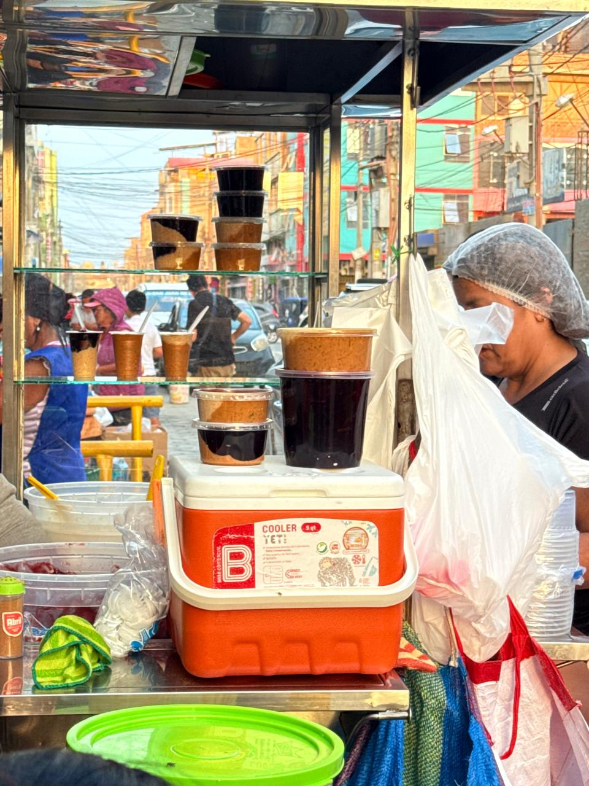
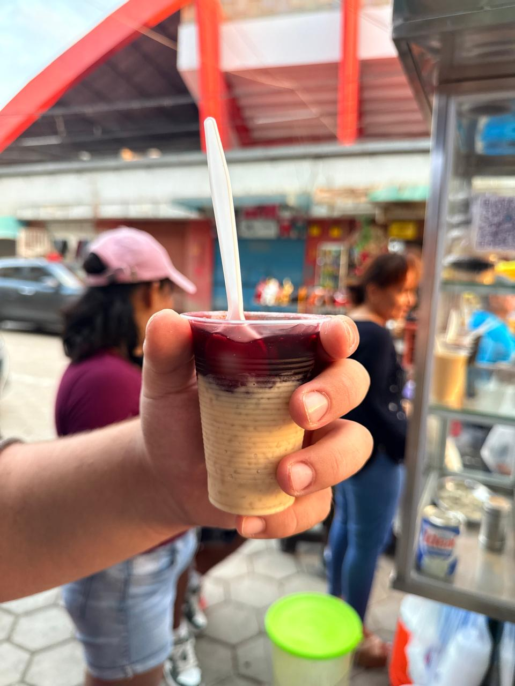

Mazamorra morada: tradición dulce que resiste desde un carrito en el corazón de Chiclayo
En Chiclayo, la tradición también vive en lo cotidiano. En la calle Juan Fanning, frente al coliseo y cerca del Mercado Modelo, un pequeño carrito se ha convertido en punto de encuentro para quienes buscan un postre clásico que reconforta: la mazamorra morada.
Buen Diente

Mazamorra: Postre cremoso a base de maíz morado, ligeramente dulce y especiado, servido frío para resaltar su sabor tradicional y reconfortante. Arroz con leche: Arroz cocido lentamente en leche con azúcar y canela, resultando en un postre suave, dulce y aromático, clásico y reconfortante.”
Un emprendimiento que nace de la necesidad
Detrás de este negocio está Marleny, quien inició su venta de postres después de la pandemia, en un contexto donde muchas familias tuvieron que reinventarse. Con esfuerzo y constancia, comenzó ofreciendo preparaciones caseras que rápidamente ganaron aceptación.
Su carrito, sencillo pero concurrido, ofrece arroz con leche, combinado, arroz zambito y, como protagonista principal, la mazamorra morada.
La mazamorra morada
Este postre, elaborado a base de maíz morado, es uno de los más representativos del Perú. Su preparación mantiene una receta tradicional que resalta el sabor, el color y la identidad cultural.

Mazamorra morada: un postre tradicional que forma parte de la identidad peruana.
Preparación tradicional
El proceso inicia con el hervido del maíz morado junto a frutas como piña y membrillo, además de especias como canela y clavo. Luego se cuela y se lleva nuevamente al fuego, donde se añade azúcar y chuño para lograr su textura espesa.
Finalmente, se incorporan trozos de fruta que aportan frescura y una consistencia más rica al postre.

Más que un postre
El entorno del mercado, con su movimiento constante, convierte la compra en una experiencia cotidiana donde tradición y vida urbana se encuentran.
Tradición que perdura
En medio de los cambios, la mazamorra de Marleny demuestra que los sabores auténticos siguen vigentes cuando se preparan con dedicación y memoria.
Más que un postre, la mazamorra morada representa identidad, esfuerzo y tradición. En las calles de Chiclayo, este pequeño carrito demuestra que los sabores más auténticos se encuentran donde la cocina se hace con historia y corazón.